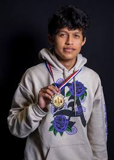

Cristian Bojorquez
With a U.S. Chess Federation rating of 1,860, Cristian is recognized not only for his strategic mastery but also for his deep understanding of the game’s principles. He credits part of his success to his rigorous study habits and use of modern chess engines like Stockfish, Fritz, and Komodo, which helped refine his analytical skills and tactical precision.
Beyond achievements as a competitor, Cristian is a devoted and very attentive coach for little kids learning chess. He is known for his patient teaching style, clear explanations, and ability to make chess both fun and educational for beginners. His encouragement and positivity help students build confidence and a love for the game.
As an active member of the South Texas Chess Society, Cristian continues to promote the growth of chess in Laredo — mentoring the next generation of players and fostering a community that values focus, respect, and intellectual challenge. In 2023, he ended a 20-year championship reign by winning the South Texas Chess Society Championship.
